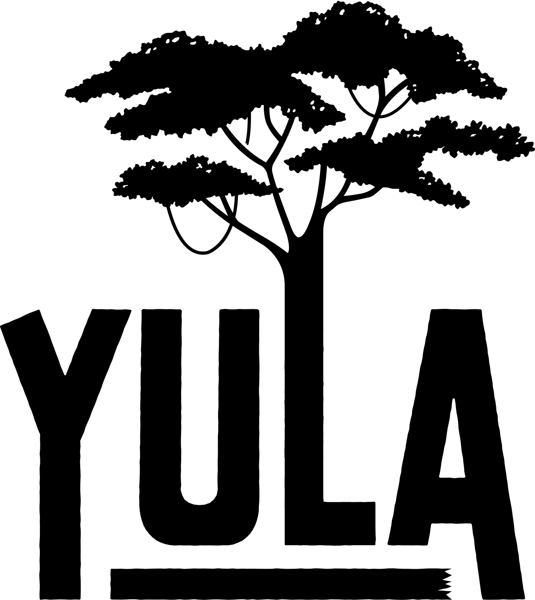
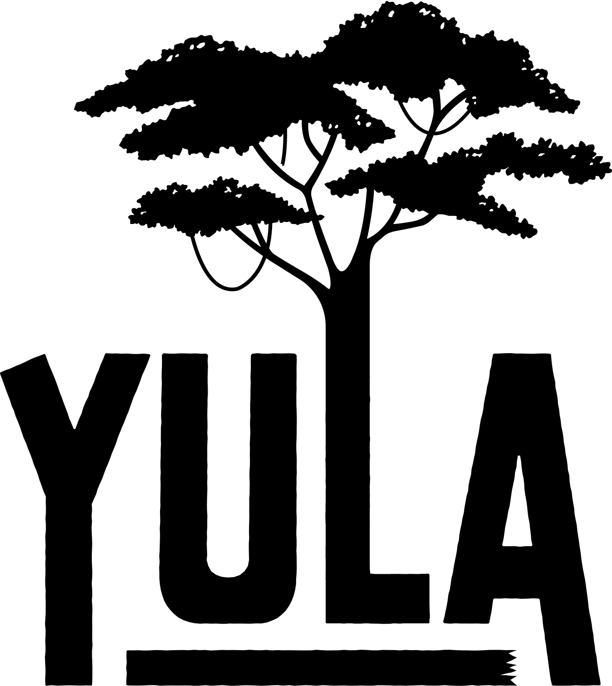

Our project
The Amazon is the inspiration for everything we do. Even our name, YULA, combines the ancient tribal words for “tree” and “energy”. That is why we are on a mission to give back with a commitment to plant 250,000 trees in the rainforest, through our partnership with reforestation non-profit One Tree Planted. "We’re on a mission to give back with a commitment to plant 250,000 trees in the Amazon rainforest through our partnership with One Tree Planted." A place of breath-taking natural beauty, our reforestation project is located in a zone of the Amazon that has been ravaged by slash and burn agriculture. Deforestation here has had a devasting impact on the environment, the wildlife and the local people but we’re determined to make a real difference. Our tree planting programme will restore 212 hectares of rainforest, offset 5443 tons of CO2 and support 342 farming families. The project is located in the buffer zone between Tambopata National Reserve, Bahuaja-Sonene National Park, and the city of Puerto Maldonado. It is home to some incredible species that have disappeared in other places. Rebuilding the rainforest here will help conserve the habitat for more than 30 high-conservation value species. This includes YULA’s spirit animals (a.k.a. the characters on our cans); the eye-catching blue macaw, the acrobatic spider monkey and the awesome panther. We want to see these animals survive and thrive.